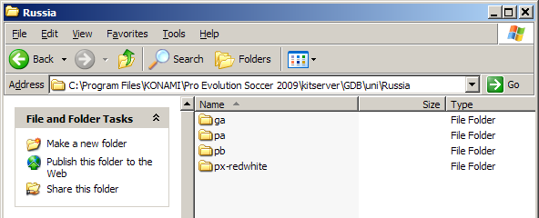
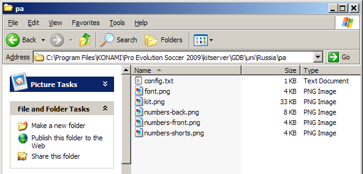
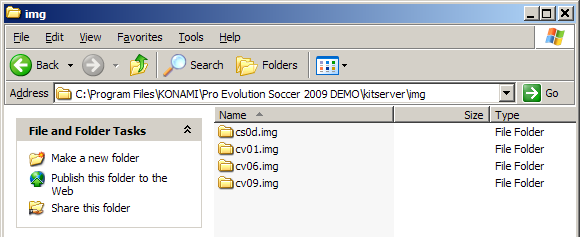

Kitserver 8: Руководство
11 ноября 2008 - Kitserver 8.1.2 - версия "Санкт-Петербург"
Самая свежая версия документации, включая переводы на различные языки, расположена на сайте: http://kitserver.ath.cx/docs/
1. Введение
Kitserver 8 - программа-аддон для игры Pro Evolution Soccer 2009 (и Pro Evolution Soccer 9 Demo). Это загрузчик разных модулей и средство управления ими.
Далее приводится краткое описание всех модулей, входящих в комплект Kitserver'a. Нажмите на название модуля, чтобы узнать о нём больше.
| Kserv 8.1.2 |
kserv.dll |
Позволяет организовать формы в базу GDB, присвоить свои формы всем командам. |
|---|
| AFS2FS 8.1.2 |
afs2fs.dll |
Даёт возможность изменять содержимое AFS (файлов .img), используя файлы и папки: теперь устанавливать и удалять патчи можно без изменения самих файлов .img, что гораздо быстрее и легче. |
|---|
| LOD Mixer 8.1.1 |
lodmixer.dll |
Настройка графики (Low,Medium,High); коррекция коэффициента пропорциональности (aspect ratio), установка любого разрешения экрана; регулировка LOD.
|
|---|
| Camera module 8.1.1 |
camera.dll |
Позволяет увеличить угол обзора для камер Normal и Wide. |
|---|
| Time module 8.1.1 |
time.dll |
Позволяет менять продолжительность матча на любое количество минут от 1 до 255. |
|---|
2. Установка и удаление
Также, как и в предыдущих версиях Kitserver'a, нужно разархивировать архив в папку где у вас установлен PES. Выглядеть это должно так:
 После этого войдите в папку kitserver и запустите setup.exe. Теперь
выбирать надо не только PES2009.exe, но и settings.exe: некоторые изменения, производимые Kitserver'ом,
производятся именно в этом файле. Просто выберите оба файла (они должны быть выбраны изначально) и
нажмите "Install". Если вы больше не хотите использовать Kitserver,
ещё раз запустите setup.exe и нажмите "Remove". Можно также установить/удалить Kitserver
только на один .exe: в меню другого надо указать "no action".
После этого войдите в папку kitserver и запустите setup.exe. Теперь
выбирать надо не только PES2009.exe, но и settings.exe: некоторые изменения, производимые Kitserver'ом,
производятся именно в этом файле. Просто выберите оба файла (они должны быть выбраны изначально) и
нажмите "Install". Если вы больше не хотите использовать Kitserver,
ещё раз запустите setup.exe и нажмите "Remove". Можно также установить/удалить Kitserver
только на один .exe: в меню другого надо указать "no action".

2.1. Расширенное использование setup.exe
setup.exe может также выполнять команды не в своём графическом интерфейсе, а через консоль (командную строку).
Это полезно, когда kitserver является частью большого патча с программой-установщиком, и последнее необходимое действие -
установка kitserver'a на игру. Чтобы установить/удалить kitserver через консоль, надо создать файл .bat и прописать в нём такую команду:
setup --install --gfile={game-exe} --sfile={settings-exe}
setup --remove --gfile={game-exe} --sfile={settings-exe}
Пример:
setup --install --gfile=..\PES2008.exe --sfile=..\settings.exe
3. Использование и настройка
3.1. settings.exe
После установки Kitserver'a, при запуске settings.exe из корневой папки игры вас спросят, хотите ли вы разблокировать все
уровни графики. В PES2009 Konami не даёт выбрать определённые уровни графики, если игра считает,
что ваш ПК для них недостаточно мощный. Если вы жмёте "Yes" ("Да"), это ограничение снимается, и,
если ваша система вам это позволяет, вы сможете поиграть с лучшей графикой.
3.2. Главный файл настроек: config.txt
В папке kitserver есть главный файл настроек программы - config.txt. Здесь модули включаются/отключаются и/или настраиваются.
Вот пример файла config.txt:
[afs2fs]
debug = 1
img.dir = "c:\juce\pes2009\"
[camera]
angle = 30
[kload]
dll = zlib1.dll
dll = libpng13.dll
dll = afsio.dll
dll = kserv.dll
dll = afs2fs.dll
dll = camera.dll
dll = lodmixer.dll
dll = time.dll
[lodmixer]
aspect-ratio.correction.enabled = 1
lod.check1 = 0
У каждого модуля есть свой отдел настроек, который начинается с [имя-модуля] и дальше содержит в себе одну или более опций. В принципе, config.txt изменять вам надо будет только в крайних случаях, когда надо поменять поведение модуля (DLL) или его включить/отключить.
Чтобы выключить какой-либо модуль, просто сделайте нерабочей соответствующую ему строку в разделе [kload], поставив решётку ('#') в её начале. Также можно просто стереть строку из файла.
3.3. Конфигурационная утилита - config.exe
В предыдущих версиях китсервера эта утилита называлась lodcfg.exe, так как она использовалась для конфигурации настроек только для LOD-миксера. Однако
теперь, она позволяет менять и другие опции - поэтому и более общее название - config.exe. В принципе, все что делает эта программа, это записывает Ваши
изменения конфигурации в config.txt. То же самое можно также сделать и вручную - с помощью любого текстового редактора (например Notepad). Более того,
некоторые изменения можно сделать только вручную, например включить/отключить модули (DLL). Однако, во многих случаях, использовать config.exe быстрее
и удобнее: например чтобы изменить угол камеры, или разрешение экрана. Не забываем нажать кнопку [Save], чтобы изменения сохранились в файле config.txt.

3.4. Месторасположение папки GDB
По умолчанию, китсервер ищет папку GDB внутри папки kitserver. Есть возможность разместить папку "GDB" в любом другом месте на диске,
и затем указать китсерверу где она находится. (Например, это удобно в случае установки новых версий китсервера.)
Для этого в секции [kload] конфигурационного файла config.txt, прописываем опцию "gdb.dir" следующим образом:
[kload]
gdb.dir = "c:\mypesfiles\"
...
2 момента, на которые важно обратить внимание:
- Вы должны указать путь в папке, которая содержит папку "GDB", а не к самой папке "GDB". Например: если полный путь - c:\mypesfiles\GDB, то опция в config.txt должна выглядеть так: gdb.dir = "c:\mypesfiles\"
- Значение в кавычках должно обязательно заканчиваться символом "\" (как в примере выше)
Наверх
4. Модуль Kserv (kserv.dll)
Модуль Kserv отвечает за использование форм из GDB во время игры. Главная особенность этого модуля в том, что вы не ограничены количеством слотов, имеющихся в cv_0.img для форм, и можете присваивать формы любой команде. С Kserv и GDB также возможно присвоить любой команде больше 2 форм. Таким образом, можно играть не только с домашней и выездной формами, но и выбирать из потенциально бесконечного набора форм для игры в еврокубках, особых товарищеских матчах и т.д. В настоящей жизни каждая команда имеет широкий выбор из различных форм и их вариаций. Организовывая свои формы в GDB, этого можно достичь.
Kserv был первым модулем, встроенным в первый Kitserver, сделанный для PES3. Отсюда пошло и название Kitserver. Позже, когда функциональность программы расширилась с добавлением новых модулей, название модуля, отвечающего за формы, было изменено на kserv, в то время как слово "Kitserver" теперь употребляется как название всей программы.
4.1 Организация GDB
В папке GDB есть папка под названием uni, в которой и должны храниться
формы команд. Главный файл в папке uni называется map.txt.
Этот файл сообщает Kitserver'y, где для какой команды расположены файлы форм. Как вы знаете, у каждой команды
есть уникальный id - число от 0 дo 313. (В данной версии модуля поддерживаются только
команды с номерами от 0 до 257). Таким образом, в map.txt вам нужно указать,
где именно расположены формы для каждой команды в GDB.
Вот как это выглядит:
# Этот файл настроек направляет Kitserver к папкам с формами команд
# Формат: <ID-команды>,"<название-папки>"
# Пример: 21,"Russia"
21,"National\Russia"
9, "National\Germany"
6, "National\England"
ВАЖНО: двойные кавычки необязательны, но желательны для избежания путаницы.
ID-номера всех команд указаны в файле
uni.txt(Если вы не устанавливали "update" от Конами, то тогда
ID-номера для команд можно взять в файле uni_org.txt)
Заметьте, что пример GDB, поставляющийся с Kitserver'ом, является лишь одним способом организации
файлов и папок для форм. Он использует папку "EPL" для форм английских команд, папку "National" для форм
национальных сборных команд и так далее. Вам могут быть удобнее просто папки команд, без разбиения
на лиги. В таком случае просто правильно отредактируйте map.txt и создайте структуру папок,
удобную вам. Это главное преимущество map.txt - гибкость огранизации форм.
Из примера map.txt выше видно, что форму для команды #21 Kitserver будет искать в папке
GDB\uni\National\Russia. В этой папке будут все доступные для команды #21 формы.
Внутри неё вам нужно создать отдельную папку для каждой формы, как здесь:

Для домашней формы полевых игроков папка должна называться pa, для выездной - pb. Папка для
дополнительной формы должна начинаться с буквы "p". Самый распространённый префикс для таких форм -
px-. Например, px-redwhite. Домашняя форма вратаря должна находится в папке
ga, гостевая - в папке gb. Дополнительные вратарские формы должны лежать в папках, начинающихся с буквы "g".
ВАЖНО: Название папки является для Kitserver'а своего рода ID, что выдвигает к нему
некоторые требования: оно не может содержать пробелы, не должно быть слишком длинным, должно быть написано
на английском, французском или любом другом языке с кодировкой latin1 (iso8859-1). Если вы хотите быть уверены
в том, что Kitserver сможет найти и "прочитать" папку, используйте только латинские буквы, цифры, подчёркивание
и дефис (знак "минус").
Теперь давайте ознакомимся с папкой одной из форм. К примеру, возьмём pa.

В таблице ниже объясняется предзначение каждого файла.
Изображения должны быть в формате PNG: 8-битном или 4-битном (для шрифтов и номеров). У файла должно быть расширение
".png".
| Имя файла | Значение | Формат |
|---|
| kit.png | Текстура формы |
8-битное PNG-изображение с разрешением 1024x512.
|
| font.png | Текстура шрифта, используется для фамилий на футболках |
8-битное или 4-битное PNG-изображение с разрешением 256x64. |
| numbers-back.png | Текстура номеров, используется для (больших) номеров на спине |
8-битное или 4-битное PNG-изображение с разрешением 512x256. |
| numbers-front.png | Текстура номеров, используется для маленьких номеров на груди |
8-битное или 4-битное PNG-изображение с разрешением 256x128. |
| numbers-shorts.png | Текстура номеров, используется для номеров на трусах |
8-битное или 4-битное PNG-изображение с разрешением 256x128. |
| config.txt | Файл настройки атрибутов формы (см. следующий раздел) |
текстовый файл в кодировке UTF-8 |
КИТМЕЙКЕРАМ! ВАЖНО!
Формы в формате BMP больше не поддерживаются. Пожалуйста, используйте формат PNG.
4.2. config.txt
Это файл настройки атрибутов формы.
Как и раньше, это простой текстовый файл - вы можете использовать Блокнот или любой другой
текстовый редактор, чтобы его просматривать или изменять. config.txt должен быть в любой папке с формой.
Ниже приведена таблица со всеми поддерживаемыми атрибутами:
| Название атрибута | Значение | Формат | Пример |
|---|
| model |
3D-модель майки |
десятичное целое число |
model = 37 |
| collar |
Тип воротника |
1|2|3|4 |
collar = 1 |
| shirt.number.location |
Где на груди должен располагаться номер. ("off" отключает номер
на груди.) Применимо только к формам сборных.
|
center|topright|off |
shirt.number.location = topright |
| shorts.number.location |
Где на трусах должен располагаться номер. ("off" отключает номер
на трусах.)
|
left|right|off |
shorts.number.location = left |
| name.location |
Где на спине должна располагаться фамилия игрока. Это полезно для
таких команд, как "Бока Хуниорс", у которой фамилия расположена внизу
майки. ("off" отключает отображение фамилии.) |
top|bottom|off |
name.location = top |
| logo.location |
Где на футболке должно распологаться лого спонсора. (Этот атрибут
не очень полезен и нужен: если у формы на спине есть лого спонсора,
то оно чаще всего рисуется китмейкером прямо на текстуре) |
top|bottom|off |
logo.location = off |
| name.shape |
Должна ли фамилия игрока на спине быть написанной прямо или округлённо. Значения
те же, что и в режиме Edit игры: type1 - прямо, type2 - немного округлённо,
type3 - округлённо, type4 - сильно округлённо. |
type1|type2|type3|type4 |
name.shape = type1 |
main.color
( radar.color ) |
Этот атрибут отображает основной цвет майки. Также он используется как цвет игроков на радаре. С помощью этого параметра Kitserver может автоматически выбрать формы обеим командам, чтобы они не совпадали по цветам. (Старое название "radar.color" также поддерживается для обратной совместимости.) |
цвет, записанный в виде шестнадцатеричного числа RRGGBB (R - красный, G - зелёный, B - синий) |
main.color = 0A5D88
radar.color = 0A5D88 |
| shorts.color |
Этот атрибут отображает цвет трусов. Он используется игрой
для определения цвета коротких лосин под трусами (under shorts)
для игроков, которые их одевают, так, чтобы он совпадал с цветом трусов. |
цвет, записанный в виде шестнадцатеричного числа RRGGBB (R - красный, G - зелёный, B - синий) |
shorts.color = 0A5D88 |
| description |
Любые записи о форме. |
любой текст в двойных кавычках |
description = "All white (WC2006 Final)" |
По-умолчанию, использование атрибута "description" включено, но его можно выключить, если в секции [kserv] файла config.txt
прописать так:
[kserv]
use.description = 0
Наверх
5. Модуль AFS2FS (afs2fs.dll)
Этот модуль Kitserver'a позволяет организовывать BIN-файлы в папки на жёстком диске, вместо того чтобы засовывать их в файлы AFS (*.img), что иногда требует много времени и свободного места.
Разные люди за последнее время предлагали похожие решения, но больше всего и настойчивее всего об этом говорил Str@teG. В конце концов я решил просто взять и сделать это. Теперь идея реализована в этом модуле - afs2fs.dll. По своему личному опыту я знаю, что люди иногда не очень охотно воспринимают необходимость ребилда AFS-файлов при установке больших патчей. Не потому, что этот процесс особенно сложный, а потому что он может занять много времени и потребовать много места на жёстком диске. С afs2fs задача сильно облегчается: вы просто кладёте BIN'ы в нужную папку - и всё. И, конечно, никаких ограничений по размеру!
5.1. Как настраивать папки
В папке kitserver должна быть папка img - если её там нет, создайте её. После этого внутри этой папки создайте папки, названные как файлы из папки "img" игры - cv00.img, cv01.img, cs0d.img и т.д. Именно в эти папки вам надо будет класть BIN-файлы.
Важно правильно назвать папки: папка должна называться точно так же, как и соответствующий ей AFS-файл. Например, если папка будет называться cv01 вместо cv01.img, то файлы из неё в игру не попадут.
Вот как выглядит моя папка img:

5.2. Как называть файлы
Файлы могут называться как угодно, но надо следовать одному правилу: в названии должен быть номер BIN'a, а предшествовать ему должен знак подчёркивания ('_'). Также имя файла не должно быть длиннее 63 символов.
Примеры правильно названных файлов:
unnamed_317.bin
gloves_5820.bin
ball_8.bin
unknow_8 (расширение .bin необязательно)
music_104.adx (расширение может отличаться от .bin: .adx чаще всего используется для музыкальных и звуковых файлов)
Примеры НЕправильно названных файлов:
unnamed10.bin - отсутствует символ подчёркивания перед номером BIN'a.
face.bin - отсутствует номер BIN'a.
5.3. Месторасположение папки "img"
По умолчанию, китсервер ищет папку img внутри папки kitserver. Есть возможность разместить папку "img" в любом другом месте на диске, и затем указать китсерверу где она находится. (Например, это удобно в случае установки новых версий китсервера.)
Для этого в секции [afs2fs] конфигурационного файла config.txt, прописываем опцию "img.dir" следующим образом:
[afs2fs]
img.dir = "c:\mypesfiles\"
2 момента, на которые важно обратить внимание:
- Вы должны указать путь в папке, которая содержит папку "img", а не к самой папке "img". Например: если полный путь - c:\mypesfiles\img, то опция в config.txt должна выглядеть так: img.dir = "c:\mypesfiles\"
- Значение в кавычках должно обязательно заканчиваться символом "\" (как в примере выше)
5.4. Имена песен и мячей
При замене песен с помощью AFS2FS можно поменять название песни и её исполнителя, используя "направляющий" файл songs.txt, который должен располагаться в папке kitserver\names.
Вот пример такого файла:
# Направляющий файл для названий песен
# Формат: <номер-bin'a>, "<название>", "<исполнитель>"
# Двойные кавычки обязательны.
# (номера бинов для песен: 91-150)
104, "Vne zony dostupa", "Gorod 312"
То же самое можно сделать и с мячами, только файл должен называться balls.txt:
# Направляющий файл для названий мячей
# Формат: <номер-мяча>, "<название-мяча>"
# Двойные кавычки обязательны.
# (Мячи пронумерованы от 1 до 13)
7, "Nike Total 90 Omni White Yellow"
Наверх
6. LOD Mixer (lodmixer.dll)
LOD Mixer - это модуль, которые позволяет настроить графический движок игры.
На данный момент можно изменять разрешение экрана, корректировать коэффицент пропорциональности
и настраивать LOD'ы. Всё это можно сделать как в главном файле настроек Kitserver'а
(kitserver/config.txt) вручную, так и с помощью графического интерфейса, запустив утилиту config.exe,
упомянутую ранее
6.1. Коэффицент пропорциональности
PES2008 предлагает торлько два коэффицента пропорциональности - 4:3 и 16:9. Но многие
ЖК-мониторы не используют ни один из них. Вместо них обычно используется 16:10
или даже 16:9.6. Картинка в таких случаях страдает: игроки становятся
слишком широкими или узкими, а мяч - больше овальным, чем круглым.
С помощью LOD Mixer'a вы можете изменить коэффицент пропорциональности на любой вам необходимый. Можно
дать LOD Mixer'y высчитать его автоматически, на лету, используя установленное разрешение,
или установить его вручную. Автоматический метод работает довольно точно,
если взять за истину, что пиксель квадратный. Но иногда вам потребуется поставить его
самому. Например, я играю на широкоформатном мониторе, но использую разрешение 800x600,
потому что моя видеокарта недостаточно сильная. Автоматический
расчёт даст нам 4:3, но если изображение растянуто на весь экран,
то посчитать нам придётся самим. Установка коэффицента пропорциональности на 1.6 (который
и является изначальным коэффицентом для моего ноутбука) даёт нужный результат.
6.2. Разрешение экрана
Вы можете поставить любое разрешение экрана, какое вам захочется, при игре в оконном режиме. Сработают
даже абсолютно сумасшедшие значения, вроде 1567x532, но в таких случаях вы почти наверняка
пострадаете от проблем производительности.
Скрытые полноэкранные разрешения тоже полностью разблокированы. Правда, заработают
только те, которые поддерживаются вашей видеокартой в полноэкранном режиме. Если вы
выберете неподдерживаемое разрешение, то PES всё равно запустится в окне.
6.3 Проверка контроллера
Эта функция пригодится людям, которые хотят сыграть турнир, лигу или кубок,
вместе. PES 2008 не позволяет игрокам контролировать обе команды в турнирном матче, только если
обе выбранные игроками команды не играют друг против друга. С этой функцией
это огрнаичение можно убрать. Теперь даже в играх
P1 vs. COM или P2 vs. COM можно свободно выбирать, каким контроллером какая команда управляется.
Так что вы можете играть вдвоём за одну команду или дать своему другу возможность играть за другую команду,
для интереса.
Также становится возможным выбрать режим "Spectator" ("Зритель") в турнирах.
6.4. Регулировка LOD
Данная версия лод-миксера содержит первую, и довольно примитивную регулировку LOD (Level-of-detail).
Вы можете включить флаг LOD: Enable image quality - и таким образом отменить использование
самого низкого уровня LOD. Что это дает? Улучшается общее качество картинки, в частности, нормально
выглядят лица игроков. Необходимо помнить, что это - дополнительная нагрузка на видеокарту, поэтому
если игра начинает притормаживать, то для восстановления плавного геймплея, отлкючите этот флаг.
Наверх
7. Модуль Camera (camera.dll)
Второй год подряд, Конами не включила в интерфейс игры опцию регулировки угла обзора камеры, несмотря на то, что сам игровой движок
поддерживает такую регулировку. C помощью данного модуля Вы сможете установить любое значение угла поворота: стадартный диапазон 0 - 9, но
на самом деле можно выставить и большее значение. Например, у меня поставлено - 30.
Выбирайте любой угол обзора камеры от 0 до 2^32-1. Углы обзора 50, 100, 200 дают довольно различные результаты.
Используйте утилиту config.exe, или можно также вручную прописать нужное значение в файле config.txt:
[camera]
angle = 30
Наверх
8. Time expander (time.dll)
Этим крошечным модулем можно изменить продолжительность матча. Можно выставить значение на 90 минут, как в настоящем футболе, или даже больше (тогда секунды будут идти медленнее, чем обычно). Также довольно интерсное занятие - матч длиной в 1 минуту. Мяч лучше от себя не отпускать, иначе вы можете больше вовсе не увидеть его у своей команды до финального свистка! Если у вас есть возможность забить, лучше не тратить её впустую - почти наверняка это будет ваша первая и последняя попытка за весь матч.
Для установки товарищеских матчей ("Exhibition") используйте атрибут exhibition.time. Для остальных режимов игры ("Cup", "League", "Master League", "UEFA Champions League") используется cup.time:
[time]
exhibition.time = 90
cup.time = 1
Над программой работали
Программирование: juce и Robbie
Бета-тестинг: пользователи форумов Evo-Web и PesWe.com.
Идеи модуля afs2fs: Str@teG
Перевод руководства на русский язык: ЧингизКан, juce
Отдельная благодарность администраторам сайта PesWe.com и юзерам форума PesWe.com.